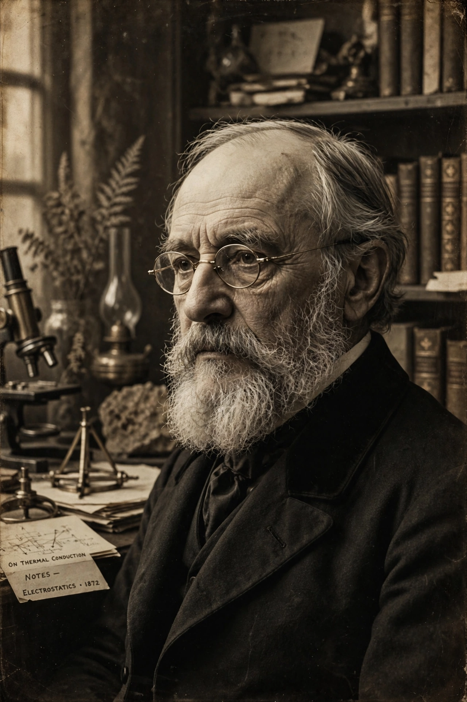

Oliver Heaviside
From Wikipedia, the free encyclopedia
| Oliver Heaviside | |
| Born | 18 May 1850 Camden Town, London, England |
|---|---|
| Died | 3 February 1925 (aged 74) Torquay, Devon, England |
| Nationality | English |
| Known for | Heaviside step function; operational calculus; reformulation of Maxwell's equations; transmission line theory; Kennelly–Heaviside layer |
| Awards | Faraday Medal (1922) |
| Fields | Electrical engineering, mathematics, physics |

Oliver Heaviside (1850–1925)
Oliver Heaviside FRS (18 May 1850 – 3 February 1925) was an English self-taught electrical engineer, mathematician, and physicist who adapted complex numbers to the study of electrical circuits, invented mathematical techniques equivalent to Laplace transforms for solving differential equations, and reformulated Maxwell's field equations into the compact vector form in common use today.
Working as a telegraph operator in Denmark and later for the Great Northern Telegraph Company, Heaviside studied the theory of signal transmission. His analysis of transmission lines produced the telegrapher's equations and showed, contrary to the understanding of the time, that a line's inductance could be used to reduce distortion rather than worsen it — a result that led to the practical use of loading coils in long-distance telephony.
Biography
Heaviside was born in Camden Town, London, the youngest of four sons of Thomas Heaviside, an engraver, and Rachel Elizabeth Heaviside (née West). Scarlet fever in childhood left him partially deaf, which contributed to a solitary and withdrawn temperament. He left school at sixteen and studied on his own, encouraged by his uncle by marriage, Charles Wheatstone, a co-inventor of the electric telegraph.
In 1870 he became a telegraph operator in Denmark, then returned to Newcastle upon Tyne as chief operator. He resigned in 1874 to devote himself to private study at his parents' home. For the rest of his life he lived largely in seclusion, moving to Devon in 1889, and never held an academic post.
Work on electromagnetism
Heaviside's most enduring achievement was recasting James Clerk Maxwell's original twenty equations into the four vector equations now known universally as Maxwell's equations, using the vector calculus notation he helped develop with Josiah Willard Gibbs working independently in America. He introduced the curl, divergence and other operators into electromagnetic theory and championed the physical picture of energy flow described by the Poynting vector.
Operational calculus and the step function
To solve circuit problems Heaviside developed an operational calculus, manipulating differential operators algebraically. Though lacking rigorous justification, it was later shown to be equivalent to the Laplace transform method. The Heaviside step function — zero for negative argument and one for positive — originated in this work and remains a standard tool in control theory and signal processing.
Atmospheric prediction
In 1902 Heaviside predicted an electrically conducting layer in the upper atmosphere that would reflect radio waves around the curvature of the Earth, explaining Marconi's transatlantic transmissions. The same prediction was made independently by Arthur Edwin Kennelly; the region is now known as the Kennelly–Heaviside layer, part of the ionosphere.
Later life and recognition
Heaviside was elected a Fellow of the Royal Society in 1891 and received an honorary doctorate from the University of Göttingen. In 1922 he became the first recipient of the Faraday Medal of the Institution of Electrical Engineers. He died at Torquay on 3 February 1925 and was buried in Paignton cemetery.